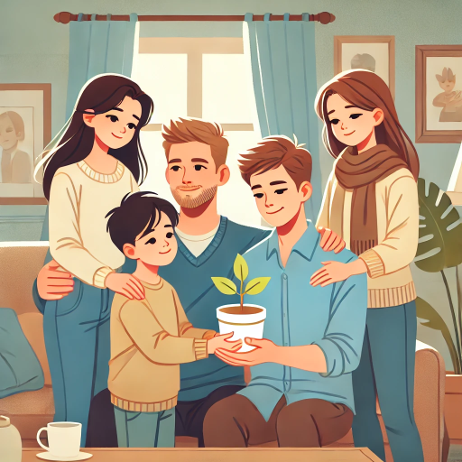

Finding Motivation in Everyday Heroes: A Reflection on Life's Inspirations
Motivation is an often complex and deeply personal aspect of life. For me, it emerges from various sources, each uniquely inspiring and pushing me forward with purpose. At the heart of my drive are the people around me—my teachers, family, the elderly, young children, and hardworking adults—whose determination, resilience, and sacrifices fuel my commitment to make a meaningful impact in my own life and the lives of others.
The Power of Teachers’ Dedication
My professors and teachers are central to my motivation. These remarkable individuals devote time, energy, and immense patience to help students like me grow and excel. Their dedication is not merely academic; it’s an investment in our future. When I think of the countless hours they spend preparing lectures, giving feedback, and guiding us, I am motivated to work hard not only for myself but also for them. I want to honor their efforts by applying what I’ve learned in practical, real-world settings. The idea that I can make a difference, even in a small way, makes me want to channel their teachings into purposeful action. Every assignment, project, or research initiative I complete feels like a step toward honoring their commitment and proving that their work has impacted a greater purpose.
Celebrating Unseen Efforts
I’ve come to appreciate how teachers often work quietly in the background, their efforts going unnoticed or underappreciated. Despite the lack of public recognition, they remain committed to their mission. They see potential in us, often more than we see in ourselves, and push us to achieve it. Their belief in my abilities pushes me to aim higher, reinforcing the idea that I can contribute positively to the world around me. It's a powerful reminder that even the smallest acts of guidance and encouragement can have a profound impact.
Family Sacrifices: A Foundation of Support
Another driving force in my life is my family, whose sacrifices have always underscored the importance of hard work, resilience, and support. My parents, in particular, have constantly invested in my education and well-being, encouraging my siblings and me to pursue our dreams. Their quiet compromises and unwavering support remind me of my responsibility to make their sacrifices meaningful. This awareness inspires me to use the opportunities I have been given to create a positive impact. It’s a reminder that my achievements are not solely my own—they reflect the collective dreams, efforts, and sacrifices of my family.
Inspiration in Everyday Moments
When I reflect on my family’s journey, I see resilience embedded in the smallest of actions—my mother’s late nights ensuring everything was prepared for the next day, my father’s long hours working to provide for us, and their unwavering commitment to our success. These moments of sacrifice and love are silent reminders to keep pushing forward. Each milestone I achieve feels like a tribute to their dedication and a small step in reciprocating their efforts.
The Unseen Struggles of the Elderly: A Lesson in Perseverance

Living in Japan has brought me closer to a generation of elderly workers who defy age with resilience and determination. Many of these individuals, well into their eighties and nineties, work tirelessly in jobs that require physical stamina and patience. Whether it’s an elderly man standing all day as a parking attendant or an older woman cooking at a bustling restaurant, their work ethic is profoundly inspiring. I think of my grandmother, who devoted herself to supporting our family, and I am reminded of the value of dedication and strength in the face of life’s challenges. These seniors, who continue to contribute to society with quiet dignity, motivate me to never take my opportunities for granted and to always strive to give back.
A Lifetime of Experience in Every Wrinkle
Observing the elderly at work is like witnessing decades of stories etched into each wrinkle and each determined step. They show me that purpose doesn't retire with age—it continues to drive and uplift, offering wisdom that we can carry forward. Each time I see an elderly person working, I am reminded of their quiet endurance, and it humbles me. Their presence encourages me to face challenges head-on, knowing that every hurdle is a stepping stone toward a more resilient self.
Children: A Source of Joy and Curiosity
Children, too, are an unexpected source of motivation. Their innocence, curiosity, and willingness to share their feelings and ideas bring a fresh perspective on life. When I spend time with young children, whether in primary or junior high school, I feel a renewed sense of wonder and possibility. They remind me of the importance of staying curious, open, and hopeful—qualities that are essential not just for personal growth but for inspiring others. By learning from their optimism and resilience, I find myself recharged and ready to face challenges with a lighter heart.
Embracing Life’s Simple Pleasures
The simplicity with which children view the world teaches me to find joy in the little things, to ask questions without hesitation, and to face challenges with a sense of adventure. Their laughter and energy remind me not to take life too seriously. In a world often clouded by stress and pressure, their unfiltered joy and curiosity serve as a gentle nudge to remember my own passions and approach life with a similar enthusiasm.
Hardworking Young Adults: A Shared Responsibility
Finally, I draw strength from the determination of young adults, like myself, who are balancing studies, work, and personal responsibilities. I am particularly moved by those who go the extra mile—whether it’s a young Uber driver delivering food in the pouring rain or someone working multiple jobs to support their family. Their dedication to building a better future for themselves and their communities reminds me of our collective responsibility. Living in Japan, I am constantly reminded that while the path may not be easy, every effort counts. This realization fuels my own commitment to push through setbacks, work diligently, and stay hopeful, knowing that perseverance will eventually bring success.
The Spirit of Grit and Tenacity
The sacrifices young adults make to achieve their dreams, often while juggling various roles and responsibilities, underscore the resilience of my generation. Their hard work highlights our common struggles and shared aspirations, making me feel connected to a larger community of dreamers and doers. Each encounter with someone in similar circumstances inspires me to persist through my own challenges, knowing that we are all striving to leave a mark and create meaningful lives.
A Journey of Purpose and Resilience
Motivation comes in many forms, and I am fortunate to find it in the people around me. Their examples remind me to keep striving, to stay connected to my values, and to approach each day with purpose. Life is filled with ups and downs, but by staying committed to my goals and honoring the support and inspiration from those who’ve impacted me, I feel ready to face whatever challenges come my way. After all, every effort counts, and the journey, however difficult, is ultimately worth it.
Building a Legacy of Inspiration
Each person who has inspired me has contributed to the foundation of who I am and who I strive to become. Their silent encouragement, seen in their actions, resilience, and sacrifices, drives me forward. I hope that one day, my own actions and achievements will serve as a source of motivation for others, creating a legacy of inspiration that extends beyond my lifetime. This journey, made richer by the heroes in my life, reminds me that true success lies not only in personal achievements but in the positive impact we leave on others.